convolve-alpha.svg FAIL
feConvolveMatrix, bias, preserveAlpha, translucent overlap
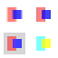
Bend chromiumDifference ×4
chromiumDifference ×4MAE 4.136 · RMSE 12.371 · Max 41 · Pixels >32: 356
markers-zero.svg FAIL
moveto-only paths, zero-length segments, omitted equal-endpoint arcs, degenerate curve tangents
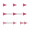
Bend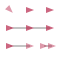
chromium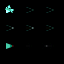
Difference ×4MAE 0.878 · RMSE 6.987 · Max 153 · Pixels >32: 55
mask-errors.svg FAIL
missing/wrong mask references, empty and zero masks, direct/indirect cycles
BendchromiumDifference ×4
MAE 42.500 · RMSE 104.103 · Max 255 · Pixels >32: 1024
text-length-spans.svg FAIL
nested textLength, fixed descendant lengths, percent textLength, mixed fonts and whitespace
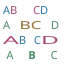
Bend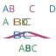
resvg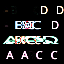
Difference ×4MAE 14.939 · RMSE 41.547 · Max 215 · Pixels >32: 628
text-length.svg FAIL
textLength, spacing, spacingAndGlyphs, middle/end anchors
BendresvgDifference ×4
MAE 1.028 · RMSE 5.014 · Max 44 · Pixels >32: 71
text-path-basic.svg FAIL
straight and curved text paths, arcs, startOffset and anchors
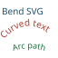
Bend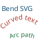
resvg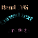
Difference ×4MAE 2.640 · RMSE 9.851 · Max 94 · Pixels >32: 166
text-path-positions.svg FAIL
numeric and percentage startOffset, pathLength calibration, position lists and glyph rotation
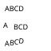
Bendchromium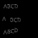
Difference ×4MAE 1.054 · RMSE 4.227 · Max 34 · Pixels >32: 2
text-path-references.svg FAIL
referenced path transforms, direct path data, ordinary text before and after a textPath
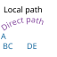
Bend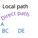
chromium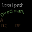
Difference ×4MAE 1.398 · RMSE 4.817 · Max 40 · Pixels >32: 10
text-path-styles.svg FAIL
path text spans, bold and italic faces, gradient paint, textLength fitting
Bend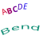
resvg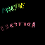
Difference ×4 MAE 1.681 · RMSE 8.331 · Max 110 · Pixels >32: 123
basic.svg PASS
rect, circle, quadratic paths
BendresvgDifference ×4
MAE 0.020 · RMSE 0.156 · Max 3 · Pixels >32: 0
clipping-transforms.svg PASS
transformed clipping, group bounding boxes, empty clips, invalid clip references
Bend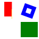
resvg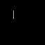
Difference ×4 MAE 0.132 · RMSE 2.830 · Max 64 · Pixels >32: 12
clipping.svg PASS
clip union, clip-rule, objectBoundingBox clips, group clipping, nested intersection
BendresvgDifference ×4
MAE 0.205 · RMSE 2.240 · Max 45 · Pixels >32: 15
colors-hsl.svg PASS
legacy/modern HSL, deg/rad/grad/turn hue, hue wrapping, numeric/percentage saturation and lightness, missing components, alpha
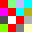
BendchromiumDifference ×4MAE 0.042 · RMSE 0.204 · Max 1 · Pixels >32: 0
colors-hwb.svg PASS
HWB conversion, gray normalization, hue units, numeric/percentage whiteness and blackness, missing components, alpha
Bend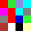
chromiumDifference ×4 MAE 0.042 · RMSE 0.204 · Max 1 · Pixels >32: 0
colors-named.svg PASS
all 148 CSS named colors, ASCII case folding, transparent
 Bend
Bend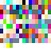
chromium Difference ×4
Difference ×4MAE 0.000 · RMSE 0.000 · Max 0 · Pixels >32: 0
colors-resources.svg PASS
functional gradient stops, functional mask colors, named pattern colors, case-insensitive currentColor, group/fill/stroke percentage opacity
BendchromiumDifference ×4
MAE 0.189 · RMSE 0.435 · Max 1 · Pixels >32: 0
colors-rgb.svg PASS
legacy percentage RGB, space-separated RGB, mixed modern number/percent channels, slash alpha, percentage alpha, clamping, missing components, hex alpha
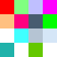
BendchromiumDifference ×4MAE 0.125 · RMSE 0.354 · Max 1 · Pixels >32: 0
compact-paths.svg PASS
adjacent decimals, compact arc flags, exponents
BendresvgDifference ×4
MAE 0.112 · RMSE 0.783 · Max 15 · Pixels >32: 0
convolve-edges.svg PASS
feConvolveMatrix, none/duplicate/wrap, asymmetric target offsets
 Bend
Bend chromium
chromium Difference ×4
Difference ×4MAE 0.000 · RMSE 0.000 · Max 0 · Pixels >32: 0
convolve-graph.svg PASS
feConvolveMatrix, named input graph, SourceAlpha, linearRGB, morphology/composite
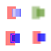
Bend chromiumDifference ×4
chromiumDifference ×4MAE 0.067 · RMSE 0.272 · Max 3 · Pixels >32: 0
convolve-kernels.svg PASS
feConvolveMatrix, rectangular/asymmetric kernels, normalization, sharpening/embossing
Bend chromium
chromium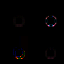
Difference ×4 MAE 0.314 · RMSE 2.431 · Max 84 · Pixels >32: 11
convolve-units.svg PASS
feConvolveMatrix, kernelUnitLength, fractional spacing, objectBoundingBox units
Bend firefox
firefox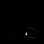
Difference ×4 MAE 0.243 · RMSE 4.122 · Max 204 · Pixels >32: 6
css-cascade.svg PASS
type/id/class selectors, specificity, source order, inline priority, important declarations
Bend chromium
chromium Difference ×4
Difference ×4 MAE 0.000 · RMSE 0.000 · Max 0 · Pixels >32: 0
css-media.svg PASS
CDATA stylesheet, media type, viewport media queries, nested media rules, style media/type attributes, at-rule skipping
 Bendchromium
Bendchromium Difference ×4
Difference ×4MAE 0.000 · RMSE 0.000 · Max 0 · Pixels >32: 0
css-resources.svg PASS
CSS paint servers, CSS clip geometry, CSS pattern content, CSS use inheritance, CSS mask
BendchromiumDifference ×4
MAE 0.021 · RMSE 0.179 · Max 4 · Pixels >32: 0
css-selectors.svg PASS
descendant/child/adjacent/general sibling combinators, attribute operators, case-insensitive attribute flag
BendchromiumDifference ×4
MAE 0.031 · RMSE 0.177 · Max 1 · Pixels >32: 0
css-structural.svg PASS
root, first/last/only child, nth-child formulas, nth-last-child, not, empty
BendchromiumDifference ×4
MAE 0.098 · RMSE 0.313 · Max 2 · Pixels >32: 0
filters-basic.svg PASS
feFlood, feOffset, feColorMatrix, feComponentTransfer, sRGB filter processing
Bendchromium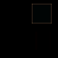
Difference ×4 MAE 0.246 · RMSE 1.306 · Max 18 · Pixels >32: 0
filters-blend-alpha.svg PASS
all sixteen feBlend modes, independent source and backdrop alpha, achromatic and black/white limits, nonseparable gamut clipping
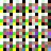
Bendchromium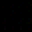
Difference ×4MAE 0.076 · RMSE 0.275 · Max 1 · Pixels >32: 0
filters-blend-compositing.svg PASS
nonseparable hue, soft-light and color-burn, overlay, partial alpha and curved coverage, post-filter clip, mask and group opacity
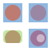
Bend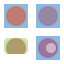
chromium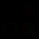
Difference ×4MAE 0.117 · RMSE 0.460 · Max 6 · Pixels >32: 0
filters-blend-linear.svg PASS
all sixteen feBlend modes, linearRGB blending, achromatic and black/white limits, nonseparable gamut clipping
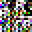
Bendchromium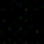
Difference ×4MAE 0.290 · RMSE 0.811 · Max 5 · Pixels >32: 0
filters-blend-opaque.svg PASS
all sixteen feBlend modes, opaque sRGB color pairs, achromatic and black/white limits, nonseparable gamut clipping
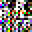
BendchromiumDifference ×4MAE 0.012 · RMSE 0.108 · Max 1 · Pixels >32: 0
filters-blend.svg PASS
feBlend multiply/screen/darken/lighten, translucent blending, default linearRGB
Bend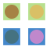
chromium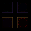
Difference ×4 MAE 0.762 · RMSE 2.474 · Max 22 · Pixels >32: 0
filters-blur.svg PASS
feGaussianBlur, anisotropic blur, linearRGB versus sRGB, SourceAlpha shadow chain, feMerge
Bend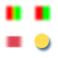
chromium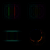
Difference ×4 MAE 0.418 · RMSE 1.496 · Max 39 · Pixels >32: 2
filters-composite.svg PASS
feComposite in/out/xor/arithmetic, named results, premultiplied alpha
Bendchromium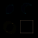
Difference ×4 MAE 0.275 · RMSE 1.320 · Max 17 · Pixels >32: 0
filters-nested.svg PASS
nested group filters, filters inside patterns, filtered context-paint markers, filtered mask content
Bendchromium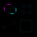
Difference ×4 MAE 0.500 · RMSE 2.955 · Max 53 · Pixels >32: 21
filters-regions.svg PASS
filterUnits, primitiveUnits, numeric and percentage bounding-box units, primitive subregions, post-filter clip/mask/opacity
BendchromiumDifference ×4
MAE 0.116 · RMSE 0.484 · Max 5 · Pixels >32: 0
filters-transforms.svg PASS
rotated/skewed filters, objectBoundingBox blur, feDropShadow
Bendchromium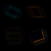
Difference ×4 MAE 0.602 · RMSE 1.829 · Max 40 · Pixels >32: 8
gradient-linear.svg PASS
linear gradients, alpha interpolation, duplicate stops
Bendchromium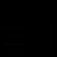
Difference ×4 MAE 0.019 · RMSE 0.138 · Max 1 · Pixels >32: 0
gradient-radial.svg PASS
radial gradients, focal point, focal radius, gradient transform
Bend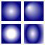
chromium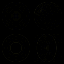
Difference ×4 MAE 0.139 · RMSE 0.465 · Max 4 · Pixels >32: 0
gradient-stops.svg PASS
currentColor, explicit inheritance, quoted URLs, single/empty stops, URL fallback
BendchromiumDifference ×4
MAE 0.003 · RMSE 0.057 · Max 1 · Pixels >32: 0
gradient-strokes.svg PASS
gradient strokes, linearRGB, stop offset clamping
Bendchromium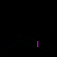
Difference ×4 MAE 0.137 · RMSE 3.009 · Max 97 · Pixels >32: 7
gradient-transforms.svg PASS
gradient references, gradient units, repeat, reflect, gradient transform
BendchromiumDifference ×4
MAE 0.393 · RMSE 4.207 · Max 93 · Pixels >32: 31
images-aspect.svg PASS
preserveAspectRatio meet/slice/none, alignment, intrinsic dimensions, one automatic dimension
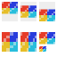
BendchromiumDifference ×4MAE 0.022 · RMSE 0.175 · Max 2 · Pixels >32: 0
images-basic.svg PASS
embedded PNG, bilinear and nearest sampling, opacity, image ignores fill/stroke styles, href/xlink:href
Bend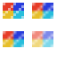
chromium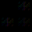
Difference ×4 MAE 0.320 · RMSE 1.102 · Max 9 · Pixels >32: 0
images-compositing.svg PASS
image clipping, image masks, image filters, images in patterns
Bend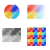
chromiumDifference ×4 MAE 0.447 · RMSE 2.539 · Max 51 · Pixels >32: 18
images-compression.svg PASS
stored DEFLATE, fixed Huffman DEFLATE, dynamic Huffman DEFLATE, multiple compression blocks
Bend chromium
chromium Difference ×4
Difference ×4 MAE 0.000 · RMSE 0.000 · Max 0 · Pixels >32: 0
images-png-formats.svg PASS
all legal PNG color types and bit depths, Adam7 interlacing, tRNS transparency, all PNG row filters, multiple IDAT chunks
BendchromiumDifference ×4
MAE 0.001 · RMSE 0.034 · Max 1 · Pixels >32: 0
images-transforms.svg PASS
rotated/skewed images, inherited CSS image-rendering, percentage dimensions
BendchromiumDifference ×4
MAE 0.578 · RMSE 1.826 · Max 20 · Pixels >32: 0
images-uris.svg PASS
base64 PNG data URI, percent-encoded PNG data URI, xlink:href fallback, href precedence
BendchromiumDifference ×4
MAE 0.483 · RMSE 1.416 · Max 9 · Pixels >32: 0
jpeg-color.svg PASS
embedded JPEG rgb, embedded JPEG cmyk, embedded JPEG ycck, embedded JPEG progressive-cmyk
BendchromiumDifference ×4
MAE 0.104 · RMSE 0.323 · Max 1 · Pixels >32: 0
jpeg-compositing.svg PASS
JPEG scaling and intrinsic aspect ratio, JPEG clipping and mask, JPEG filtering, JPEG inside pattern
BendchromiumDifference ×4
MAE 0.549 · RMSE 2.698 · Max 55 · Pixels >32: 13
jpeg-encoding.svg PASS
embedded JPEG restart, embedded JPEG progressive-restart, embedded JPEG quant16, embedded JPEG huffman16
BendchromiumDifference ×4
MAE 0.055 · RMSE 0.235 · Max 2 · Pixels >32: 0
jpeg-progressive.svg PASS
embedded JPEG progressive-gray, embedded JPEG progressive-444, embedded JPEG progressive-422, embedded JPEG progressive-420
Bendchromium Difference ×4
Difference ×4 MAE 0.059 · RMSE 0.245 · Max 2 · Pixels >32: 0
jpeg-sequential.svg PASS
embedded JPEG gray, embedded JPEG 444, embedded JPEG 422, embedded JPEG 420
 Bend
Bend chromiumDifference ×4
chromiumDifference ×4MAE 0.059 · RMSE 0.245 · Max 2 · Pixels >32: 0
jpeg-uris.svg PASS
JPEG base64 and percent data URIs, xlink:href JPEG, separate sequential scans
BendchromiumDifference ×4
MAE 0.029 · RMSE 0.171 · Max 2 · Pixels >32: 0
markers-basic.svg PASS
marker-start/mid/end, auto-start-reverse, strokeWidth/userSpaceOnUse units, curve endpoint tangents
BendchromiumDifference ×4
MAE 0.096 · RMSE 0.719 · Max 18 · Pixels >32: 0
markers-compositing.svg PASS
group opacity includes markers, objectBoundingBox excludes markers, clipping and masking marker paint, transformed context gradient
BendchromiumDifference ×4
MAE 0.413 · RMSE 2.745 · Max 52 · Pixels >32: 21
markers-context.svg PASS
context-fill/context-stroke, solid/gradient/pattern context paint, independent paint opacity
BendchromiumDifference ×4
MAE 0.111 · RMSE 0.510 · Max 5 · Pixels >32: 0
markers-recursive.svg PASS
direct and indirect recursive markers, invalid references, zero-size marker viewport
BendchromiumDifference ×4
MAE 0.044 · RMSE 0.812 · Max 28 · Pixels >32: 0
markers-styles.svg PASS
inherited marker properties, marker shorthand source order, important marker declarations, marker definition styles
BendchromiumDifference ×4
MAE 0.001 · RMSE 0.031 · Max 1 · Pixels >32: 0
markers-vertices.svg PASS
closed-path angle bisectors, subpath endpoints, quadratic/smooth/arc tangents, polyline markers
BendchromiumDifference ×4
MAE 0.118 · RMSE 0.797 · Max 14 · Pixels >32: 0
markers-viewports.svg PASS
marker viewBox, refX/refY, meet/slice/none, overflow clips, nonuniform transforms
BendchromiumDifference ×4
MAE 0.204 · RMSE 1.879 · Max 47 · Pixels >32: 13
mask-alpha.svg PASS
alpha mask type, mask-mode override
BendchromiumDifference ×4
MAE 0.216 · RMSE 0.468 · Max 2 · Pixels >32: 0
mask-compositing.svg PASS
overlapping translucent mask shapes, sRGB/linearRGB luminance
BendchromiumDifference ×4
MAE 0.417 · RMSE 0.645 · Max 1 · Pixels >32: 0
mask-gradients.svg PASS
gradient masks, bbox mask content, masking groups
BendresvgDifference ×4
MAE 0.074 · RMSE 0.276 · Max 2 · Pixels >32: 0
mask-inheritance.svg PASS
mask definition inheritance, explicit mask paint override
BendresvgDifference ×4
MAE 0.010 · RMSE 0.116 · Max 3 · Pixels >32: 0
mask-linear-rgb.svg PASS
linearRGB mask luminance
 Bendchromium
Bendchromium Difference ×4
Difference ×4MAE 0.000 · RMSE 0.000 · Max 0 · Pixels >32: 0
mask-nested.svg PASS
nested masks, clipping plus masking, use in masks
BendresvgDifference ×4
MAE 0.005 · RMSE 0.081 · Max 3 · Pixels >32: 0
mask-units.svg PASS
maskUnits, maskContentUnits, group bounding boxes, transformed masks
Bend resvgDifference ×4
resvgDifference ×4 MAE 0.000 · RMSE 0.000 · Max 0 · Pixels >32: 0
masks.svg PASS
luminance masks, mask opacity, group masking
BendresvgDifference ×4
MAE 0.206 · RMSE 0.466 · Max 4 · Pixels >32: 0
morphology-basic.svg PASS
erode, dilate, premultiplied channels, SourceAlpha
BendchromiumDifference ×4
MAE 0.110 · RMSE 0.332 · Max 1 · Pixels >32: 0
morphology-graph.svg PASS
named results, outline composition, opening, primitive subregions, merge
BendchromiumDifference ×4
MAE 0.035 · RMSE 0.188 · Max 1 · Pixels >32: 0
morphology-radius.svg PASS
fractional radii, zero axes, negative axes
 Bendchromium
Bendchromium Difference ×4
Difference ×4MAE 0.000 · RMSE 0.000 · Max 0 · Pixels >32: 0
morphology-units.svg PASS
objectBoundingBox radii, nonuniform scale, rotation, skew
BendchromiumDifference ×4
MAE 0.890 · RMSE 4.117 · Max 48 · Pixels >32: 26
opacity.svg PASS
group opacity, fill opacity, inline styles, inheritance
BendresvgDifference ×4
MAE 0.081 · RMSE 0.291 · Max 4 · Pixels >32: 0
paint-order-markers.svg PASS
all six fill/stroke/marker orders, translucent marker overlap, owner opacity isolation
BendchromiumDifference ×4
MAE 0.326 · RMSE 0.571 · Max 1 · Pixels >32: 0
paint-order-shapes.svg PASS
all paint-order permutations, translucent fill/stroke composition
BendchromiumDifference ×4
MAE 0.041 · RMSE 0.203 · Max 1 · Pixels >32: 0
paths.svg PASS
path commands, arcs, fill rules
BendresvgDifference ×4
MAE 0.027 · RMSE 0.322 · Max 18 · Pixels >32: 0
pattern-errors.svg PASS
zero/negative tile dimensions, template cycles, paint recursion
Bend resvg
resvg Difference ×4
Difference ×4 MAE 0.000 · RMSE 0.000 · Max 0 · Pixels >32: 0
pattern-inheritance.svg PASS
template definition inheritance, explicit inherited paint, local pattern override
 Bendresvg
Bendresvg Difference ×4
Difference ×4MAE 0.000 · RMSE 0.000 · Max 0 · Pixels >32: 0
pattern-nested.svg PASS
nested patterns, gradients inside patterns, mask inside pattern, use inside pattern
BendresvgDifference ×4
MAE 0.133 · RMSE 0.439 · Max 4 · Pixels >32: 0
pattern-reference.svg PASS
href/xlink pattern templates, descriptive children, geometry overrides, fill opacity
BendresvgDifference ×4
MAE 0.074 · RMSE 0.284 · Max 2 · Pixels >32: 0
pattern-transform.svg PASS
pattern transforms, bounding-box transforms, pattern stroke, negative tile origin
BendchromiumDifference ×4
MAE 0.809 · RMSE 3.245 · Max 39 · Pixels >32: 6
pattern-units.svg PASS
patternUnits, patternContentUnits, tile origin, percentage tile dimensions
BendresvgDifference ×4
MAE 0.006 · RMSE 0.077 · Max 1 · Pixels >32: 0
pattern-viewbox.svg PASS
pattern viewBox, meet/slice/none, tile clipping
BendresvgDifference ×4
MAE 0.045 · RMSE 0.285 · Max 3 · Pixels >32: 0
stroke-calibration.svg PASS
pathLength, multiple subpath dash resets
BendchromiumDifference ×4
MAE 0.031 · RMSE 0.306 · Max 8 · Pixels >32: 0
stroke-caps.svg PASS
butt/round/square caps, zero-length subpaths, moveto-only
BendresvgDifference ×4
MAE 0.045 · RMSE 0.326 · Max 4 · Pixels >32: 0
stroke-dash-curves.svg PASS
curved dashes, closed dash seam, square caps
BendresvgDifference ×4
MAE 0.149 · RMSE 0.905 · Max 33 · Pixels >32: 1
stroke-dash-zero.svg PASS
zero-length dash caps, zero-length subpaths, all-zero arrays
BendfirefoxDifference ×4
MAE 0.121 · RMSE 0.668 · Max 6 · Pixels >32: 0
stroke-dashes.svg PASS
even/odd dash arrays, offsets, percentages, zero dashes
BendresvgDifference ×4
MAE 0.082 · RMSE 0.436 · Max 4 · Pixels >32: 0
stroke-joins.svg PASS
miter/round/bevel joins, miter limits, explicit closure
BendresvgDifference ×4
MAE 0.077 · RMSE 0.875 · Max 38 · Pixels >32: 2
stroke-vector.svg PASS
non-scaling-stroke, nonuniform transforms
BendchromiumDifference ×4
MAE 0.174 · RMSE 0.928 · Max 8 · Pixels >32: 0
svg-image-auto.svg PASS
intrinsic dimensions, automatic width/height, viewBox aspect ratio, root attribute sizing
 Bendchromium
Bendchromium Difference ×4
Difference ×4MAE 0.000 · RMSE 0.000 · Max 0 · Pixels >32: 0
svg-image-contexts.svg PASS
SVG images in patterns, SVG images in masks and markers, use instances, embedded vector stroke antialiasing
BendchromiumDifference ×4
MAE 0.068 · RMSE 0.320 · Max 6 · Pixels >32: 0
svg-image-nested.svg PASS
nested SVG images, transforms, outer clipping and group opacity
BendchromiumDifference ×4
MAE 0.201 · RMSE 0.508 · Max 8 · Pixels >32: 0
svg-image-percent.svg PASS
SVG image percentages, nested viewports, width percentage with automatic height
BendchromiumDifference ×4
MAE 0.008 · RMSE 0.089 · Max 2 · Pixels >32: 0
svg-image-resources.svg PASS
SVG image style isolation, local paint resources, local use references, same IDs in separate documents
BendchromiumDifference ×4
MAE 0.138 · RMSE 1.012 · Max 11 · Pixels >32: 0
svg-image-sizing.svg PASS
embedded SVG data URIs, image aspect alignment/meet/slice/none, independent document viewport
BendresvgDifference ×4
MAE 0.015 · RMSE 0.134 · Max 3 · Pixels >32: 0
svg-image-text.svg PASS
font loading for text inside SVG data images, isolated image font context, matching bundled and embedded reference Noto outlines, image text opacity
BendchromiumDifference ×4
MAE 0.736 · RMSE 2.502 · Max 29 · Pixels >32: 0
symbols.svg PASS
symbol viewBox, instance dimensions, SVG references, symbol clipping
BendchromiumDifference ×4
MAE 0.040 · RMSE 0.286 · Max 7 · Pixels >32: 0
text-basic.svg PASS
glyph outlines, kerning, font sizes
BendresvgDifference ×4
MAE 0.160 · RMSE 0.691 · Max 13 · Pixels >32: 0
text-paint-order.svg PASS
stroke under text fill, overlapping glyphs painted as one run, inherited paint-order, text ignores fill-rule
BendresvgDifference ×4
MAE 0.118 · RMSE 0.482 · Max 5 · Pixels >32: 0
text-paints.svg PASS
gradient text, stroked glyph outlines, clipped text
BendresvgDifference ×4
MAE 0.232 · RMSE 0.965 · Max 13 · Pixels >32: 0
text-path-shapes.svg PASS
text on a basic-shape equivalent path
BendresvgDifference ×4
MAE 0.666 · RMSE 4.105 · Max 81 · Pixels >32: 33
text-position.svg PASS
per-character x, text anchors, letter spacing, repeated rotation
BendresvgDifference ×4
MAE 0.159 · RMSE 0.724 · Max 13 · Pixels >32: 0
text-spans.svg PASS
tspan paint and size, mixed-font anchors, baseline shifts
BendresvgDifference ×4
MAE 0.201 · RMSE 0.969 · Max 14 · Pixels >32: 0
text-style.svg PASS
regular/bold/italic/bold italic, CSS font inheritance
BendresvgDifference ×4
MAE 0.313 · RMSE 1.142 · Max 14 · Pixels >32: 0
text-unicode.svg PASS
accented Latin, Greek, Cyrillic
BendresvgDifference ×4
MAE 0.210 · RMSE 0.819 · Max 13 · Pixels >32: 0
text-whitespace.svg PASS
collapsed whitespace, tspan whitespace, xml:space preservation
BendresvgDifference ×4
MAE 0.083 · RMSE 0.570 · Max 13 · Pixels >32: 0
transforms.svg PASS
transforms, viewBox, rounded rect, ellipse
BendresvgDifference ×4
MAE 0.034 · RMSE 0.362 · Max 11 · Pixels >32: 0
use-clips.svg PASS
use inside clips, userSpaceOnUse clip positioning, instance opacity
BendchromiumDifference ×4
MAE 0.023 · RMSE 0.151 · Max 1 · Pixels >32: 0
use-cycles.svg PASS
direct self reference, indirect reference cycles, independent instances
BendchromiumDifference ×4
MAE 0.016 · RMSE 0.203 · Max 5 · Pixels >32: 0
use-inheritance.svg PASS
explicit inheritance, currentColor in instances, symbol default size
BendchromiumDifference ×4
MAE 0.005 · RMSE 0.107 · Max 4 · Pixels >32: 0
use.svg PASS
local href/xlink references, instance styles, reference chains, use positioning
BendchromiumDifference ×4
MAE 0.037 · RMSE 0.319 · Max 7 · Pixels >32: 0
viewports-nested.svg PASS
recursive viewports, percentage dimensions, transformed viewport, visible overflow, zero viewport
BendchromiumDifference ×4
MAE 0.103 · RMSE 0.561 · Max 12 · Pixels >32: 0
viewports.svg PASS
nested viewport dimensions, percentage geometry, meet/slice/none, overflow clipping
BendchromiumDifference ×4
MAE 0.022 · RMSE 0.274 · Max 8 · Pixels >32: 0